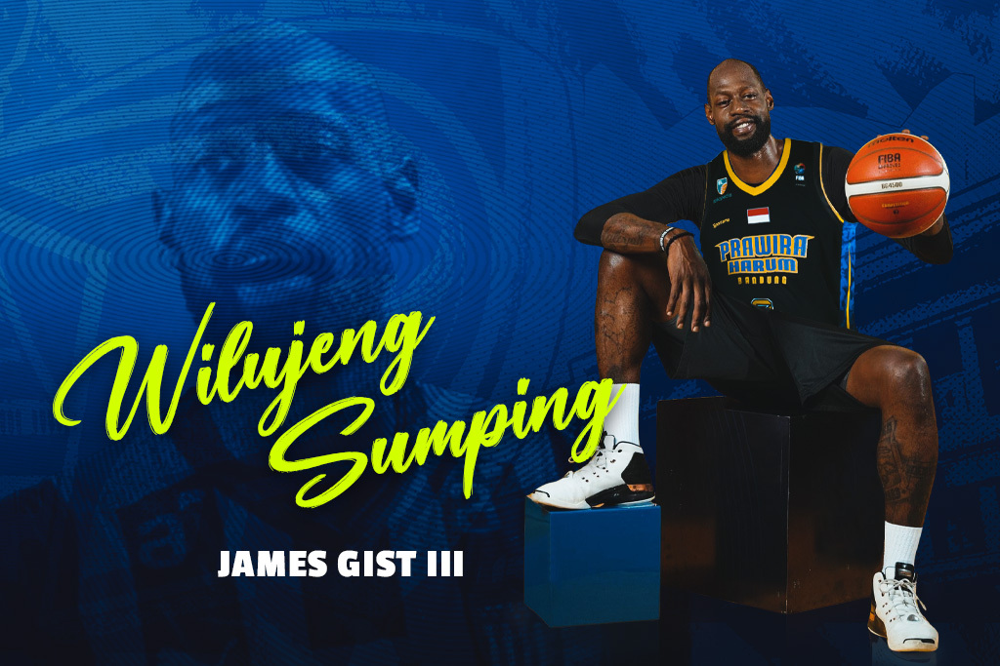

Welcome Players
Setelah melepas 3 pemain asing nya yang dinilai kurang memuaskan penampilan nya, akhirnya prawira harum bandung resmi mengumumkan asing baru mereka untuk pertandingan yang akan datang dan mereka mengajak kembali Brandone Francis untuk pulang ke prawira, tidak hanya itu mereka juga merekrut seorang legenda yang cukup lama di perbasketan eropa yaitu James Gist, dan yang tak kalah menarik yaitu seorang Hester.
Wilujeng Sumping, Antonio Hester

Prawira Harum Bandung merekrut pebasket berposisi power forward, Antonio Hester. Pebasket kelahiran Miami, Florida, Amerika Serikat itu sepakat dan siap membela Prawira Harum Bandung di kompetisi Indonesia Basketball League (IBL) 2024. Di musim 2023-24, Antonio bermain untuk klub asal Mongolia, Nalaikh Bison. Di klub itu, ia tampil di 11 pertandingan dengan rerata 17.1 menit. Dari penampilan itu, ia mencetak 13.9 ppg, 6.8 rebound dan 1.3 assist. "Prawira Harum Bandung berkomitmen untuk terus berkembang dan meraih prestasi di kancah bolabasket nasional. Dengan ini, kami merekrut Antonio Hester untuk memperkuat Prawira di IBL 2024," kata Head of Communication Prawira Harum Bandung, Adhi Pratama.
Welcome Back, Brandone Francis

Pelatih Prawira Harum Bandung, David Singleton mengungkap, Brandone Francis dalam perjalanan menuju Bandung. Pemain asal Dominika itu akan segera membela Prawira Harum Bandung di Indonesia Basketball League (IBL) 2024. Brandone bisa saja tampil di laga antara Prawira Harum Bandung melawan Borneo Hornbills Bogor di C-Tra Prawira Arena, Bandung, Sabtu, 2 Maret 2024. Meski begitu, Dave -- sapaan akrab David—, mengatakan jika dirinya akan melihat kesiapan sang pemain lebih dulu. "Kami akan melihat kondisinya lebih dulu. Ini soal keputusan jelang pertandingan, tidak ada jaminan baginya untuk langsung bermain. Pertandingan di hari Minggu adalah yang paling memungkinkan, sedangkan pertandingan besok sejujurnya, masih 50:50," kata Dave, Jumat, 1 Maret 2024.
Wilujeng Sumping, James Gist
Prawira Harum Bandung menjalin kerja sama dengan pebasket berposisi sebagai centre asal Amerika Serikat, James Clough Gist III. Pemain kelahiran Silver Spring, Maryland, 26 Oktober 1986 itu sepakat membela Prawira Harum Bandung di Indonesia Basketball League (IBL) 2024. Di tahun 2023 lalu, James bermain untuk Bahcesehir College di Basketball Champions League dan mencatatkan 11 kali penampilan dengan 3.5 ppg, 3 rpg dan 0.7 apg. Kemudian, ia bermain untuk Penarol di Liga Sudamericana de Baloncesta FIBA dengan catatan penampilan di 2 laga dengan 7.5 ppg, 5 rpg dan 0.5 apg. "Wilujeng sumping untuk James Gist yang akan bermain untuk Prawira Harum Bandung di IBL 2024. Kehadiran James adalah kebutuhan tim yang didasarkan atas rekomendasi tim pelatih," kata Head of Communication Prawira Harum Bandung, Adhi Pratama, Jumat, 16 Februari 2024.